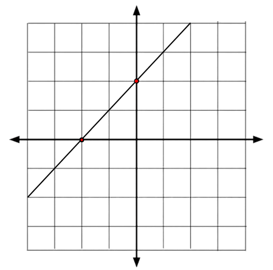
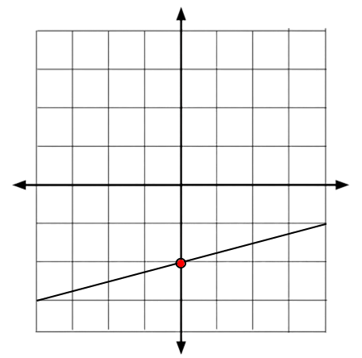
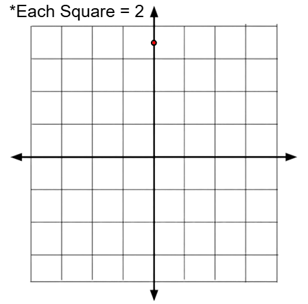
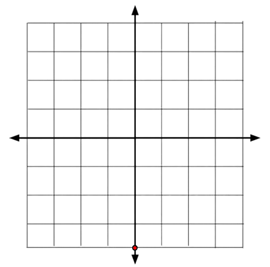
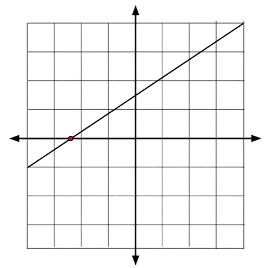
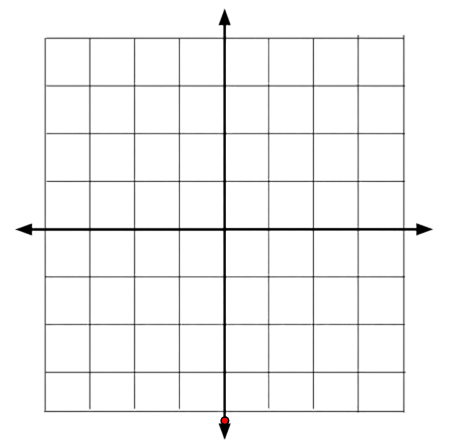
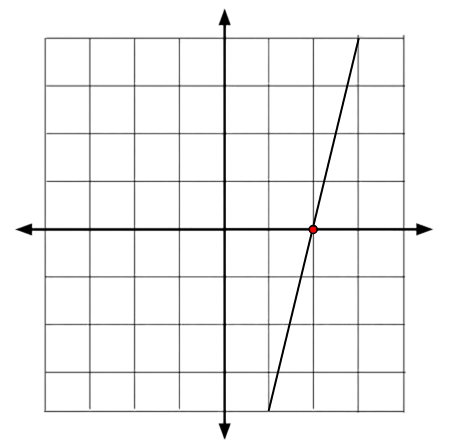
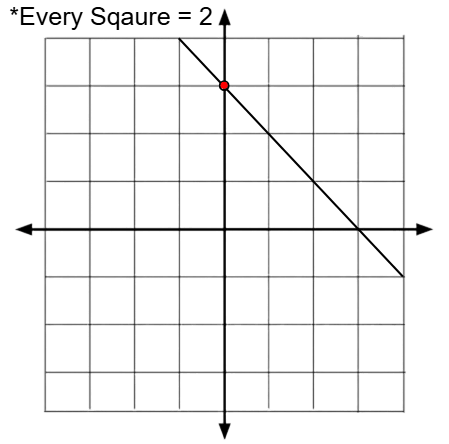

Y-intercepts and X-intercepts are points in a function that either cross the y-axis (the line that goes up) and the x-axis (the line that goes straight)...

Y-intercepts are points that cross the y-axis, examples may include...
X-intercepts are points that cross the x-axis, examples may include...
Y-intercepts mentioned before are points that cross the y-axis (the line that points up)...

In slope intercept form, the y-intercept appears as, "b"...
To find the y-intercept in different forms of functions require different steps.
To find y-intercepts in standard form or Ax + By = C. Substitute x as 0, so for example...
So in this function, we substitute x as 0...
Now we divide both sides by 3...
So the y-intercept of this function is (0, 7) or when the y equals 7...

This strategy can be applied to slope-intercept form when the function's formula is known...
Same thing as last time, we substitute x as 0...
Now we evaluate the function...
So the y-intercept of this is -4 or (0, -4)...

Now to solve the y-intercept(s) of a function only knowing the slope and one given point is different.
To solve for a y-intercept knowing only the slope and one point on the line, first subsitute y in y = mx + b as the y value in the coordinate of the given point, and do the same thing for x. For example...
First we substitute x and y...
So the y-intercept of this function is 9.
X-intercepts are points that cross the x-axis...

The x-intercept of a function in slope interecpt form are noted with, "x" in y = mx + x...
X-intercepts are found similar to y-intercepts, except you substitute x instead of y. For example in standard form...
So instead of substituting x as 0, we substitute y as 0...

So the x-intercept of this function is -4.5 or (-4.5, 0). To find an x-intercept in slope intercept form, do the same thing...
The x-intercept of this function is 2 or (2, 0).

Now to find the x-intercept of a function only knowing the slope and one point, you must calculate the y-intercept of the function, so for example...
We substitute the values and first find the y-intercept...
Now that we know the y-intercept, which is 6, we can solve for the x-intercept...
Now we know the x-intercept, which is also 6...
